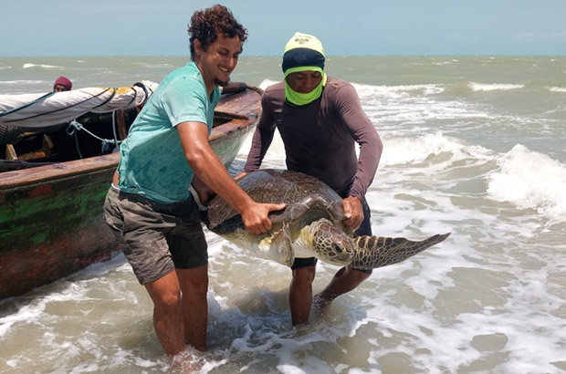
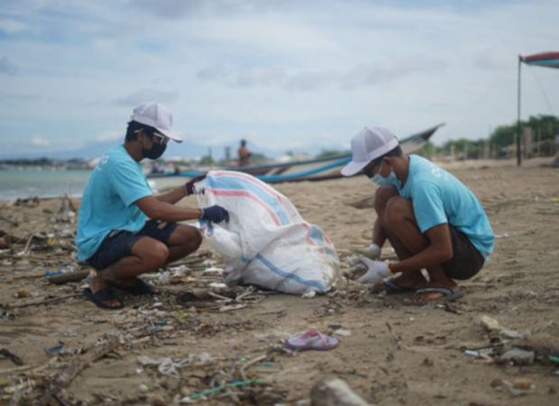
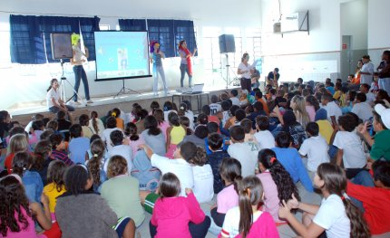

Resgate e Reabilitação Marinha
Focado no socorro e tratamento de animais feridos por plásticos e pesca. Seu apoio financia o centro de reabilitação.

Saiba maisNossas ações são a prova de que a conservação marinha é possível. Dos mutirões de limpeza às aulas de educação ambiental, cada projeto é desenhado com base científica e executado com paixão. Conheça as principais frentes de trabalho que seu apoio ajuda a manter ativas:
Focado no socorro e tratamento de animais feridos por plásticos e pesca. Seu apoio financia o centro de reabilitação.

Saiba maisMutirões de limpeza costeira e remoção de microplástico em áreas críticas. Nosso foco é na prevenção e remoção de toneladas de lixo.

Saiba maisPrograma contínuo de conscientização em escolas e comunidades. Transformamos crianças e adultos em Guardiões do Azul.

Saiba maisNão importa a forma de apoio: seja com o seu tempo ou com um recurso financeiro, sua contribuição é vital para manter cada projeto ativo. Escolha como você quer participar desta corrente.
Invista o seu tempo e talento nas nossas patrulhas ecológicas ou nos programas de educação. Sua energia faz a diferença no campo.
SEJA VOLUNTÁRIOSeu apoio financeiro garante a compra de equipamentos, o sustento do centro de resgate e a auditoria das nossas contas.
DOAR AGORA